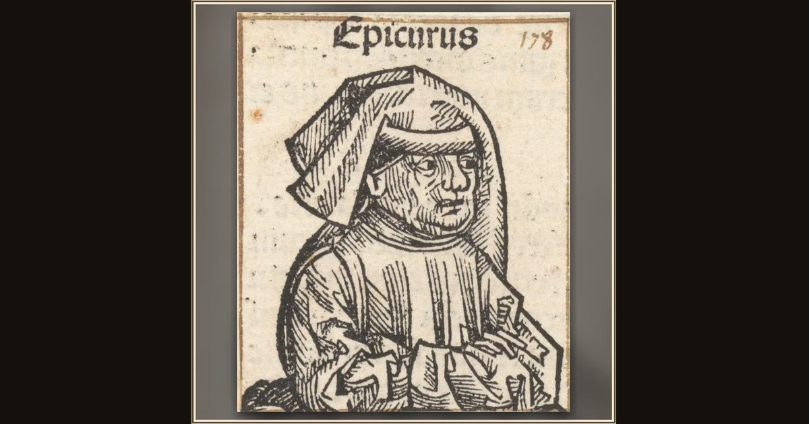

Epicurus (Liber Chronicarum)
workshop of Michel Wolgemut; workshop of Wilhelm Pleydenwurff · 1493 · rijksmuseum
A woodcut of a hooded man that the printed label names as the philosopher Epicurus, from the Nuremberg Chronicle, set beside his first doctrines, including that death is nothing to us. (10.139) Explore its place in Epicurus's Letters and Principal Doctrines, P